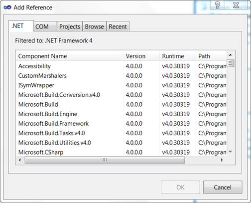
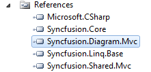

To add reference assemblies:
1. On the Solution Explorer, right-click the References folder, and then click Add Reference.

Figure 15: Add Reference Option Displayed on Right-Clicking the References Folder
 Note: The Add Reference dialog box appears and the
.NET tab is highlighted by default. The assemblies for the MVC application are
listed here.
Note: The Add Reference dialog box appears and the
.NET tab is highlighted by default. The assemblies for the MVC application are
listed here.

Figure 16: Add Reference Dialog Box
2. Select the following assemblies: Syncfusion.Core, Syncfusion.Diagram.Mvc, Syncfusion.Linq.Base, and Syncfusion.Shared.Mvc.
3. Click OK.
Note: The selected assemblies are added under
References.

Figure 17: Selected Assemblies Displayed under the References Folder